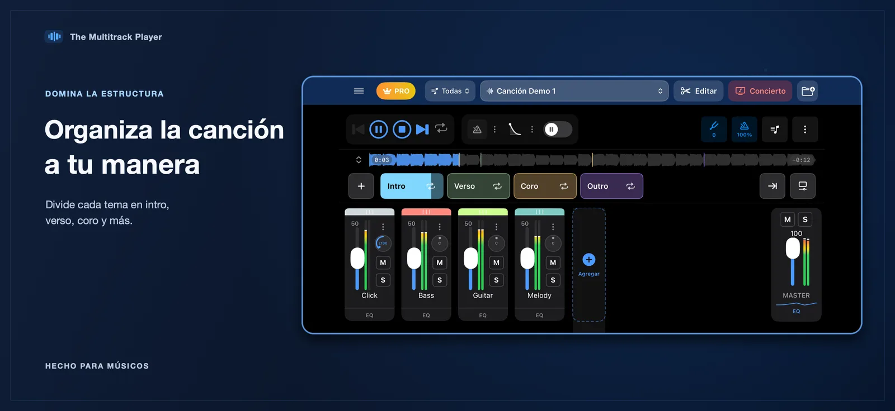
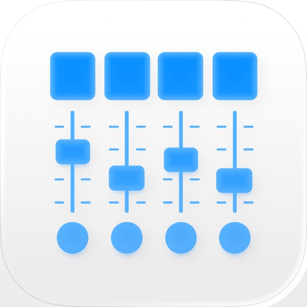
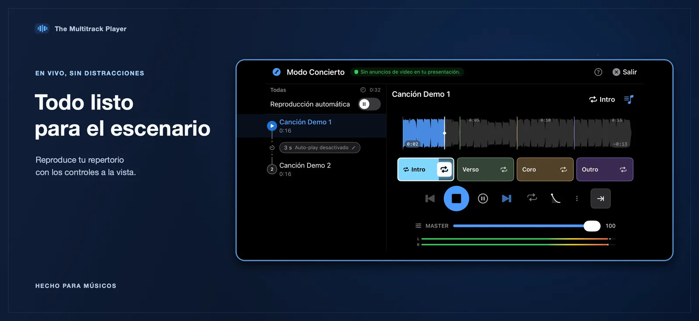
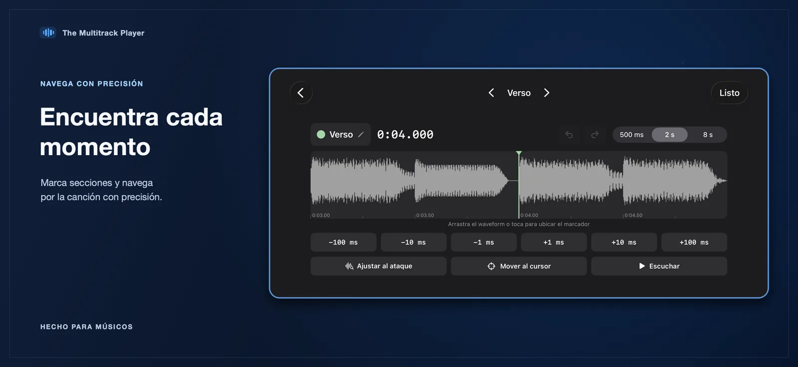
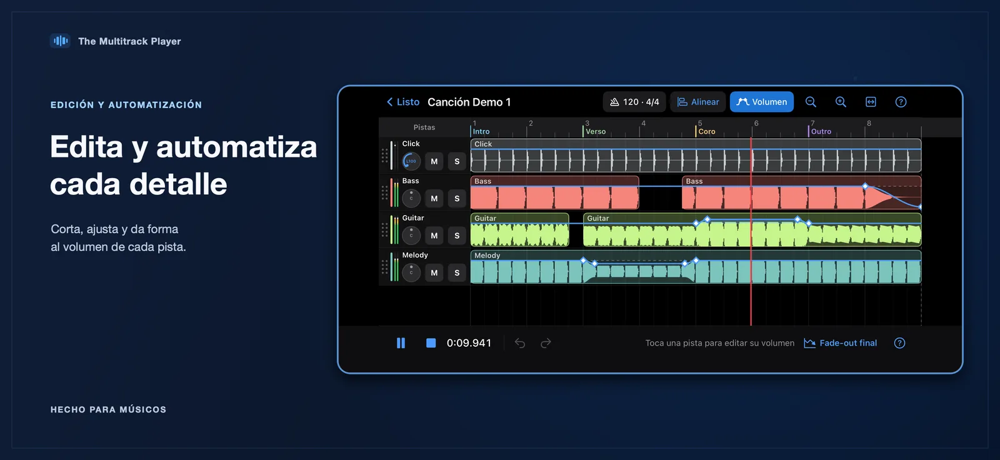
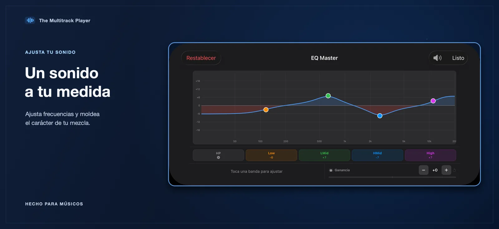
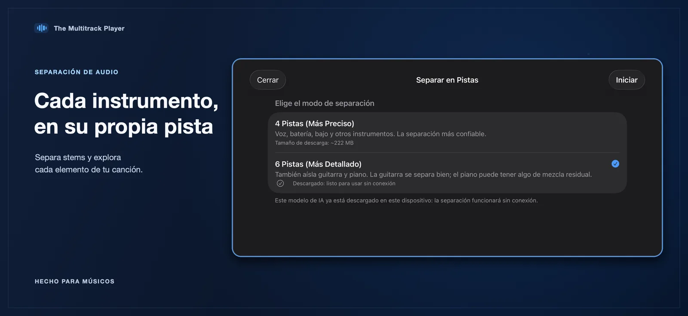
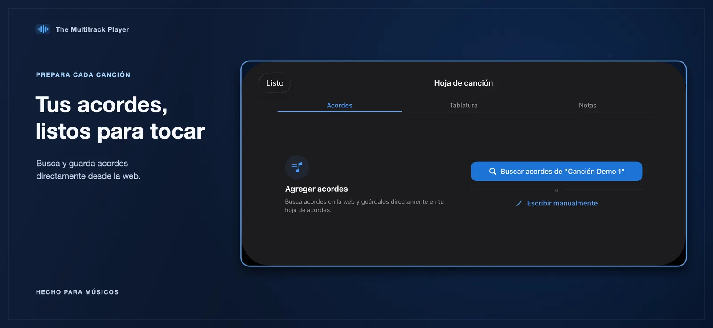
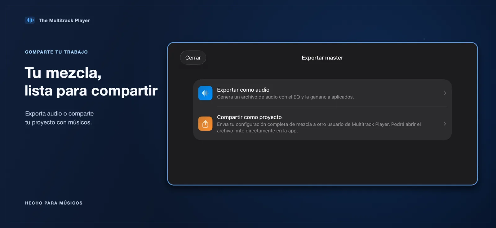

Recorre las secciones de la canción
Organiza el arreglo en secciones con nombre y salta a la parte que necesita tu presentación.

The Multitrack PlayerThe Multitrack Player
Ten cada pista bajo tu control. Organiza el repertorio, ajusta la mezcla y recorre las secciones de cada canción con controles de reproducción en vivo diseñados para músicos.
Para iPhone y iPad · Requiere iOS 17 o posterior

Un espacio de trabajo para cada parte
Prepara tus canciones, encuentra el momento que necesitas y haz ajustes sin perder de vista el arreglo completo.

Organiza el arreglo en secciones con nombre y salta a la parte que necesita tu presentación.

Usa la forma de onda y los controles finos para marcar los límites de las secciones y pulir las transiciones.

Ajusta volumen, panorámica, silencio, solo y tono de cada pista; controla también tempo, compás y metrónomo. Cuando esté disponible, asigna pistas a salidas separadas de una interfaz de audio conectada.

Afina una pista con el ecualizador integrado y mantén la mezcla manejable mientras cambia el arreglo.

Cuando está habilitada, puedes elegir una separación de cuatro o seis stems. Después de descargar el modelo, puedes separar pistas sin conexión.

Consulta recursos de acordes y conserva la información de la canción junto a tu proyecto multipista.

Genera un archivo de audio con tu mezcla o comparte el proyecto .mtp para seguir trabajando.
Según las funciones habilitadas en la app, tu flujo de trabajo también puede incluir grabación de audio, automatización del volumen de pistas, edición de audio y enrutamiento multicanal a una interfaz conectada. La app también incluye videotutoriales.
Importa audio desde Archivos, organiza las pistas en un proyecto y usa los mismos controles para preparar y tocar tu repertorio. Tus archivos de audio y proyectos importados se almacenan localmente en tu dispositivo.
Importa archivos de audio desde Archivos, incluidos formatos habituales compatibles con iOS.
Organiza secciones, balancea las pistas y deja a mano las señales que necesitas.
Usa el modo concierto, la lista de canciones y los controles individuales durante la reproducción.
The Multitrack Player
Descubre la reproducción y los controles multipista para iPhone y iPad.
Ver en App Store